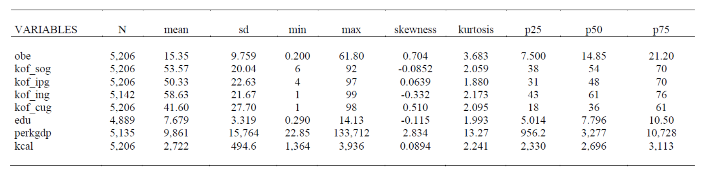
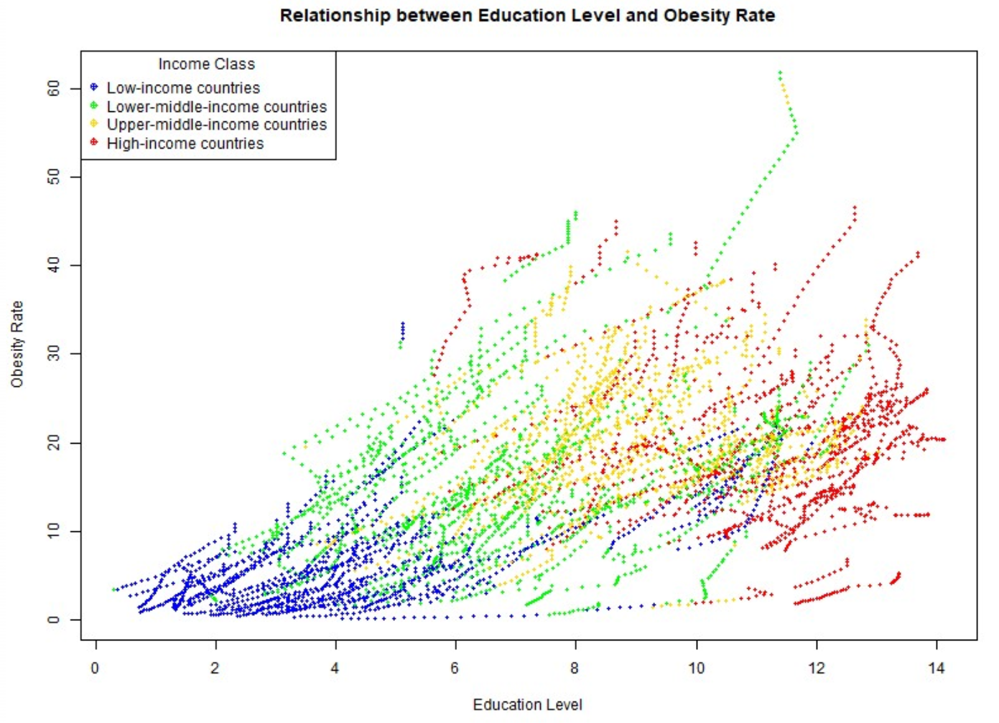
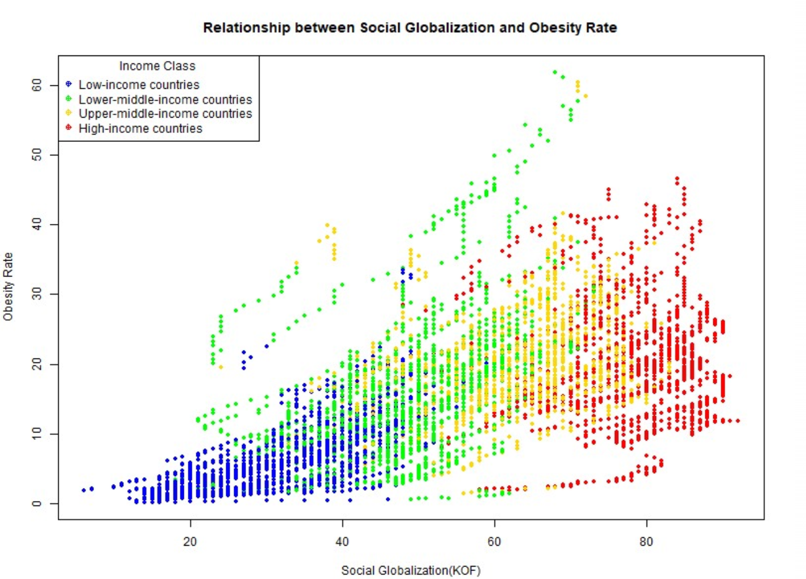
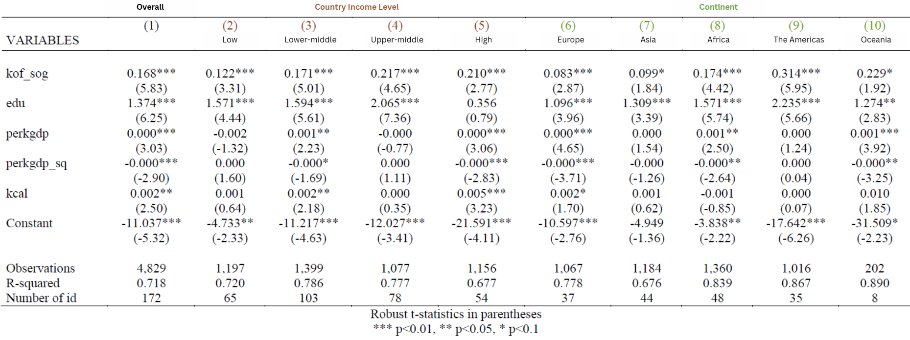
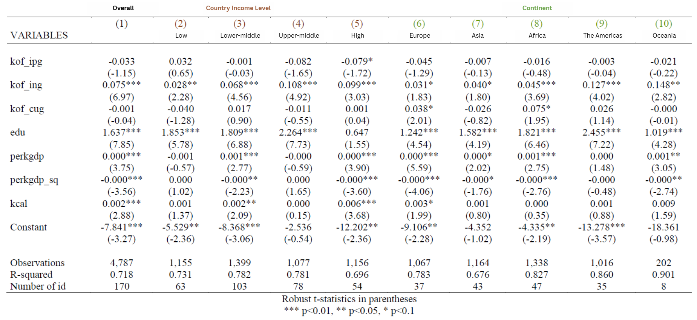
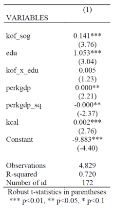

Social Globalization, Education, and Obesity Link to heading
Evidence from a Cross-Country Panel Study
Global obesity has become a major public health concern, with prevalence rates rising sharply over the past three decades. According to The Lancet, the global adult obesity rate has more than doubled since 1990, and by 2022 more than one billion adults worldwide were classified as obese. In response, the World Health Organization launched the Acceleration Plan to Stop Obesity in 2022, highlighting obesity as a critical global health challenge.
This study examines the relationship between social globalization, education, and obesity prevalence using country-level panel data, with a particular focus on how structural and informational factors interact to shape long-run health outcomes.
Research Motivation Link to heading
Social globalization captures the extent of cross-border social interaction, media exposure, and information exchange, which may influence dietary preferences, consumption norms, and lifestyle behaviors. Existing studies have documented associations between social globalization and obesity outcomes at both the individual and aggregate levels, suggesting that globalization-related exposure can shape long-run health outcomes.
Education has likewise been identified as a key determinant of health-related behaviors and physiological outcomes. However, the relationship between education and obesity remains ambiguous, as education may simultaneously promote health awareness while also reflecting broader socioeconomic changes that affect consumption patterns.
Importantly, social globalization and education are closely intertwined through information diffusion and communication technologies. Despite this connection, most studies examine these factors in isolation. This study contributes to the literature by analyzing their joint effects on national obesity prevalence, allowing for interaction effects and heterogeneous transmission channels within a unified panel framework.
Data and Variables Link to heading
The analysis is based on an unbalanced panel dataset covering 172 countries from 1990 to 2021. Obesity is measured as the share of the adult population with a body mass index (BMI) greater than or equal to 30, following the World Health Organization definition.
Social globalization is captured using the KOF Social Globalization Index, which aggregates three dimensions: personal contacts, information flows, and cultural proximity. Education is measured by average years of schooling at the national level.
To account for differences in economic development and nutritional conditions, the analysis includes GDP per capita, its squared term, and daily per-capita caloric supply as control variables.
Variable Definitions Link to heading
| Variable | Code | Definition |
|---|---|---|
| Obesity Prevalence | obe |
Percentage of the adult population with a body mass index (BMI) ≥ 30, following the WHO definition |
| Social Globalization Index (KOF) | kof_sog |
Composite index capturing social globalization through interpersonal contacts, information flows, and cultural proximity |
| Interpersonal Contacts (KOF) | kof_ipg |
Cross-border personal interactions, including international travel, migration, and personal communication |
| Information Flows (KOF) | kof_ing |
Exposure to global information through media, internet usage, and international communication channels |
| Cultural Proximity (KOF) | kof_cug |
Diffusion of global cultural products and norms |
| Education | edu |
Average years of schooling at the national level |
Control Variables Link to heading
| Variable | Code | Definition |
|---|---|---|
| GDP per Capita | perkgdp |
Gross domestic product divided by population, measuring economic development and living standards |
| Daily Caloric Supply | kcal |
Average daily per-capita caloric supply, capturing national food availability and nutritional conditions |
Descriptive Statistics and Exploratory Analysis Link to heading



Several countries exhibit unusually high obesity prevalence during specific periods and are identified as outliers in the dataset. These include the Bahamas (2015–2021), Egypt (2019–2021), Kiribati (2008–2021), Saint Kitts and Nevis (2017–2021), Qatar (2020–2021), and Samoa (1995–2021).
Empirical Models Link to heading
Basic Model Link to heading
The baseline specification relates obesity prevalence to aggregate social globalization and education:
$$\begin{aligned} obe_{i,t} &= \beta_0 + \boldsymbol{\beta_1 \cdot kofsog_{i,t} + \beta_2 \cdot edu_{i,t}} + \beta_3 \cdot \alpha_i \\ &+ \left( \beta_4 \cdot perkgdp_{i,t} + \beta_5 \cdot perkgdp^2_{i,t} + \beta_6 \cdot kcal_{i,t}\right) + u_{i,t} \end{aligned}$$
where $obe_{i,t}$ denotes the obesity prevalence rate in country $i$ at time $t$, and $\alpha_i$ captures country fixed effects.
KOF Subcomponent Model Link to heading
To identify which dimensions of social globalization drive the observed relationship, the aggregate KOF index is decomposed into its subcomponents:
$$\begin{aligned} obe_{i,t} &= \beta_0 + \boldsymbol{\beta_1 \cdot kofipg_{i,t} + \beta_2 \cdot kofing_{i,t} + \beta_3 \cdot kofcug_{i,t}} + \beta_4 \cdot edu_{i,t} + \beta_5 \cdot \alpha_i \\ &+ \left( \beta_6 \cdot perkgdp_{i,t} + \beta_7 \cdot perkgdp^2_{i,t} + \beta_8 \cdot kcal_{i,t}\right) + u_{i,t} \end{aligned}$$
The three components correspond to interpersonal contacts, information flows, and cultural proximity, respectively.
Interaction Model Link to heading
To test whether the effect of social globalization on obesity varies with educational attainment, an interaction specification is estimated:
$$\begin{aligned} obe_{i,t} &= \beta_0 + \beta_1 \cdot kofsog_{i,t} + \beta_2 \cdot edu_{i,t} + \boldsymbol{\beta_3 \cdot kof \times edu_{i,t}} + \beta_4 \cdot \alpha_i \\ &+ \left( \beta_5 \cdot perkgdp_{i,t} + \beta_6 \cdot perkgdp^2_{i,t} + \beta_7 \cdot kcal_{i,t}\right) + u_{i,t} \end{aligned}$$
This specification allows the marginal effect of social globalization to vary systematically with the level of education.
Model Results Link to heading
basic model Link to heading

The baseline specification shows that aggregate social globalization is positively and statistically significantly associated with obesity prevalence, with the estimated coefficient significant at the 1% level. Education also exhibits a positive and statistically significant relationship with obesity prevalence at the 1% level. The estimated coefficients of the control variables are consistent with theoretical expectations, supporting the validity of the model specification. The model demonstrates strong explanatory power, with an adjusted $R^2$ of 0.718.Subgroup analyses reveal notable heterogeneity across income levels and regions. By income group, the positive effect of social globalization is strongest in upper-middle-income countries, followed by high-income, lower-middle-income, and low-income economies. The positive association between education and obesity remains statistically significant across income groups except in high-income countries, with the largest effects observed in upper-middle-income economies. Regionally, the estimated impact of social globalization is strongest in the Americas, followed by Oceania, Africa, and Asia, and weakest in Europe. A similar pattern is observed for education, with the largest effects in the Americas and comparatively smaller effects in Europe.
KOF subcomponent model Link to heading

The results from the KOF subcomponent models indicate that, among the dimensions of social globalization, only the information flows component exhibits a consistently positive and statistically significant association with obesity prevalence across all subgroups. This finding suggests that the effect of social globalization on obesity is driven primarily through information-related channels, rather than through other social or cultural dimensions.In addition, the positive association between education and obesity prevalence remains statistically significant across income groups except for high-income countries, indicating heterogeneity in the role of education across different stages of economic development.
Interaction model Link to heading

The interaction model results show that social globalization remains positively and statistically significantly associated with obesity prevalence, and education also continues to exhibit a positive and statistically significant effect. In contrast, the estimated interaction term between social globalization and education is not statistically significant, indicating no evidence of an interaction effect. Given the lack of statistical significance, further subgroup analysis based on the interaction term is not pursued.
Conclusion Link to heading
Using country-level aggregate data, this study finds that social globalization has a statistically significant positive effect on national obesity prevalence. A one-point increase in the KOF social globalization index is associated with a 0.168 percentage-point increase in obesity prevalence, with the effect driven primarily by information flows.
Education is also positively and significantly associated with obesity prevalence at the country level. On average, each additional year of schooling is associated with a 1.374 percentage-point increase in obesity prevalence, although this effect is not statistically significant in high-income countries.
This result contrasts with much of the existing literature based on individual-level data. While prior studies often focus on individuals in highly developed settings—where education is closely linked to health awareness and healthier lifestyle choices—this study relies on country-level data covering economies at different stages of development. In lower-income contexts, increases in educational attainment may instead capture broader socioeconomic improvements and expanded access to calorie-dense and processed foods, which can contribute to higher obesity prevalence.
References Link to heading
Ashley Fox, Wenhui Feng, and Victor Asal (2019). What is driving global obesity trends? Globalization or “modernization”? Global Health, 15, 32.Axel Dreher (2006). Does globalization affect growth? Evidence from a new index of globalization. Applied Economics, 38(10), 1091–1110.
Costa-i-Font, Joan, and Núria Mas (2016). “Globesity”? The effects of globalization on obesity and caloric intake. Food Policy, 64, 121–132.
Cornali, Federica, and Simona Tirocchi (2012). Globalization, education, information and communication technologies: What relationships and reciprocal influences? Procedia – Social and Behavioral Sciences, 47, 2060–2069.
Brunello, Giorgio, Daniele Fabbri, and Margherita Fort (2013). The causal effect of education on body mass: Evidence from Europe. Journal of Labor Economics, 31(1), 195–223.
Ghosh, S. (2017). Globalization obesity: Asian experiences of “globesity”. MPRA Paper, No. 94601.
Goryakin, Y., T. Lobstein, W. P. T. James, and M. Suhrcke (2015). The impact of economic, political and social globalization on overweight and obesity in 56 low- and middle-income countries. Social Science & Medicine, 133, 67–76.
Devaux, Marion, Franco Sassi, Jody Church, Michele Cecchini, and Francesca Borgonovi (2011). Exploring the relationship between education and obesity. OECD Journal: Economic Studies, 2011(1).
Oberlander, L., A.-C. Disdier, and F. Etilé (2017). Globalisation and national trends in nutrition and health: A grouped fixed-effects approach to intercountry heterogeneity. Health Economics, 26(9), 1146–1161.
Sart, G., Y. Bayar, and M. Danilina (2023). Impact of educational attainment and economic globalization on obesity in adult females and males: Empirical evidence from BRICS economies. Frontiers in Public Health, 11, 1102359.
Hsieh, Tsai-Hao, Jason Jiunshiou Lee, Ernest Wen-Ruey Yu, Hsiao-Yun Hu, Shu-Yi Lin, and Chin-Yu Ho (2020). Association between obesity and education level among the elderly in Taipei, Taiwan between 2013 and 2015: A cross-sectional study. Scientific Reports, 10, 20285.